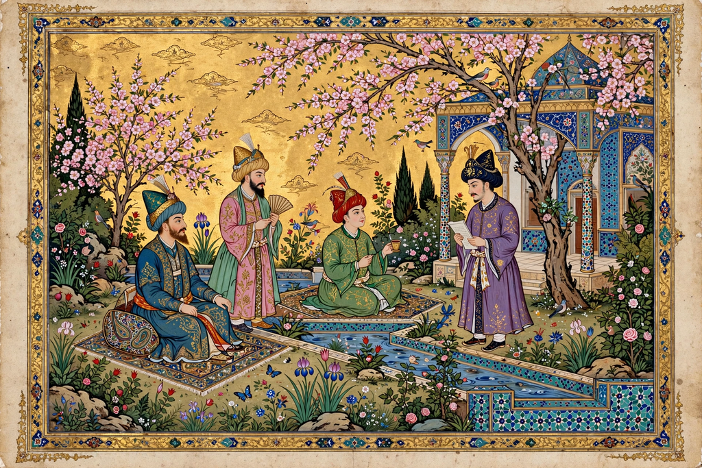

Persian art — the art of Iran and the wider Persian cultural sphere — encompasses many of the most refined traditions in world art: rock reliefs and monumental architecture, miniature painting, calligraphy, carpets, metalwork, ceramics, and garden design. It developed over more than three millennia, from the Achaemenid Empire through Parthian and Sasanian rule to the Islamic dynasties, and strongly influenced the arts of the Ottoman Empire and Mughal India.
Achaemenid art (550–330 BC) is exemplified by the palace city of Persepolis, with its processional reliefs of tribute-bearers, glazed brick friezes, and the Oxus Treasure's goldwork. Sasanian art (224–651 AD) excelled in rock reliefs, stucco, silver plate, and silk textiles whose motifs traveled as far as Japan.
After the Islamic conquest, Persian art fused with Islamic forms: lustreware and mina'i ceramics (comparable in ambition to contemporary Iznik pottery), intricate arabesque ornament, and above all the miniature painting tradition that blossomed under the Mongol Ilkhanids and reached its height at the Timurid courts of Herat and the Safavid courts of Tabriz and Isfahan. The illustrated Shahnameh (Book of Kings) manuscripts are among the summits of world book art. Persian gardens, carpets — such as the Ardabil Carpet of 1539–40 — and calligraphy in the nastaʿlīq script complete a tradition in which ornament, poetry, and craft remained inseparable.
Persian artistic conventions spread east and west along trade routes, shaping Mughal painting and architecture in India and Ottoman court arts in Turkey, and remain central to Iranian cultural identity.